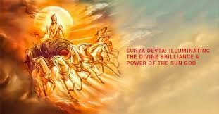
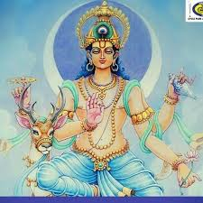
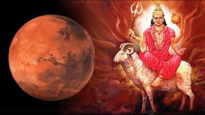
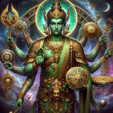
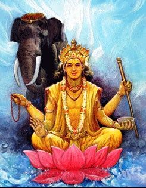
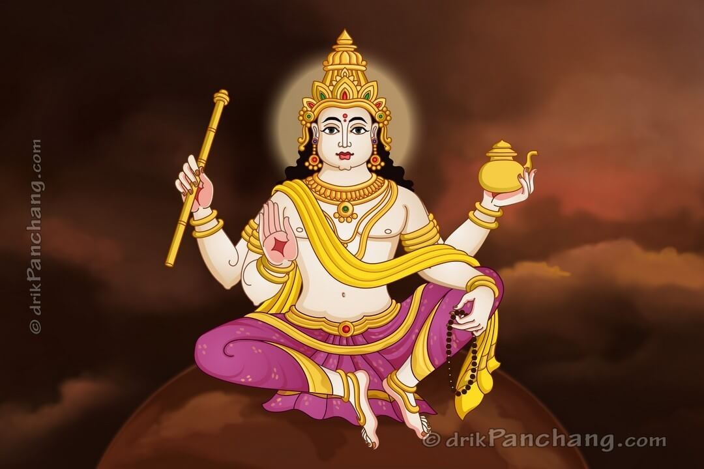
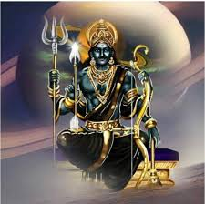
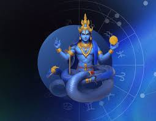
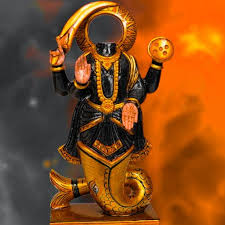

The Sun is regarded as the king among all the celestial bodies in Vedic astrology. It symbolizes the soul (Atman), authority, ego, vitality, and leadership. It rules the sign of Leo and governs Sunday. The Sun reflects one's self-esteem, willpower, and fatherly influence. A well-placed Sun in the birth chart grants confidence, charisma, fame, and governmental authority. Conversely, a weak Sun can result in health issues, lack of direction, or problems with one’s identity or father. It is the giver of life, and its placement defines how brightly a person shines in the world.

The Moon governs the mind, emotions, instincts, and motherly love. It rules Cancer and governs Monday. It represents sensitivity, intuition, nurturing, and mental stability. In Vedic astrology, it plays a central role in determining emotional reactions and mental peace. A strong Moon provides emotional balance, imagination, and receptiveness. A weak Moon can cause mental unrest, anxiety, indecisiveness, and emotional dependency. As the fastest-moving planet, it reflects the constant changes in our feelings and perceptions.

Mars is the planet of action, drive, courage, and aggression. It rules Aries and Scorpio and governs Tuesday. Mars represents physical strength, ambition, sports, and assertiveness. It also symbolizes younger siblings and warfare. A well-placed Mars bestows leadership qualities, energy, and determination. However, when ill-placed, it can bring impulsiveness, anger, accidents, and conflicts. Mars also influences how one initiates projects and overcomes adversity. Its fiery nature makes it a warrior planet in the celestial army.

Mercury represents intelligence, speech, communication, analysis, and commerce. It rules Gemini and Virgo, and governs Wednesday. Known as the prince of the planetary cabinet, it symbolizes youthfulness, logic, wit, and adaptability. Mercury controls our ability to reason, learn, write, and negotiate. A strong Mercury enhances verbal and written communication, business acumen, and technical skills. When afflicted, it causes nervousness, deceit, speech problems, and difficulty making decisions. It is closely linked with education, accounting, and data handling.

Jupiter, the largest planet, is a symbol of wisdom, spirituality, expansion, and abundance. It rules Sagittarius and Pisces and governs Thursday. In Vedic astrology, it represents higher learning, ethics, dharma, and divine grace. Jupiter influences religion, philosophy, teachers, children, and wealth. A well-placed Jupiter brings optimism, growth, good fortune, and success in education and marriage. An afflicted Jupiter may cause arrogance, laziness, or misjudgments in moral matters. It is considered the Guru (spiritual teacher) of the gods and signifies one's capacity to live a meaningful life.

Venus governs beauty, love, relationships, luxury, and creativity. It rules Taurus and Libra and governs Friday. Venus is the planet of romance, art, music, pleasures, and comfort. A well-placed Venus grants charm, harmony, wealth, and appreciation for aesthetics. It also indicates how we connect in romantic relationships and what we value in life. An afflicted Venus may lead to indulgence, vanity, or troubles in love and finances. It also plays a vital role in marital happiness and artistic talents.

Saturn is the slow-moving planet that governs discipline, structure, karma, and perseverance. It rules Capricorn and Aquarius and governs Saturday. Known as the strict teacher, Saturn rewards hard work, patience, and maturity. It deals with long-term efforts, career, suffering, and responsibilities. A strong Saturn brings success through discipline and resilience; a weak or afflicted one causes fear, delays, sorrow, and setbacks. Saturn’s influence is most strongly felt during its transit periods, especially Sade Sati and Dhaiya, often bringing significant life changes.

Rahu is a shadow planet and represents illusion, obsession, materialism, foreign connections, and unconventional thinking. It does not have a physical form and is always retrograde. Rahu influences desires that are often insatiable and can lead to sudden rise or fall. When positively placed, it brings innovation, fame, and worldly success. When afflicted, it can cause confusion, addiction, cheating, and scandals. Rahu is associated with technology, foreign travel, and unconventional paths.

Ketu is the other shadow planet and represents spirituality, detachment, past karma, and liberation (moksha). It is headless, representing the dissociation from ego and worldly attachments. A strong Ketu can lead to spiritual enlightenment, intuition, and renunciation. However, when afflicted, it can cause confusion, aimlessness, and chronic dissatisfaction. Ketu often shows where we already have experience from past lives and are being pushed to let go in this one. It governs mysticism, occult, and higher realms of consciousness.
